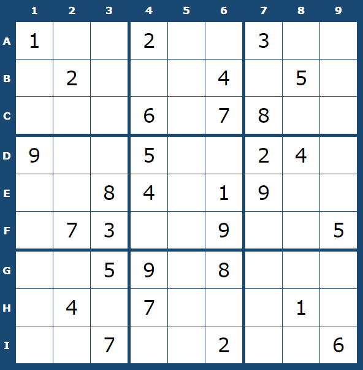

Logica necesară
Nava Infinity Explorer are un design complex de redundanță de gradul 8 (adică exită în mod nominal 9 sisteme de orice tip disponibile simultan) a tuturor sistemelor esențiale călătoriei și menținerii condițiilor de viață la bord, pentru a evita cu orice preț naufragierea pasagerilor. Aceste sisteme sunt:
- Sistem de navigație
- Sisteme de susținere a vieții
- Sisteme de comunicații
- Generatoare de energie
- Sisteme de propulsie
- Scuturi și sisteme de apărare
- Gravitație artificială
- Alimente și apă
- Sisteme de management al deșeurilor
Panoul de control poate comuta între diferite sisteme aflate în funcțiune la un anumit moment. Pentru a asigura o flexibilitate largă în alegerea sistemelor active, ele au fost împărțite într-un grid de 9 x 9.
Panoul de control poate activa oricare dintre cele 9 sub-griduri 3 x 3, oricare coloană, sau oricare linie a gridului. Pentru ca niciun sistem să rămână descoperit în oricare dintre alegerile panoului de control automat, repartiția sistemelor de control este făcută în așa fel încât oricare sub-grid, linie sau coloană să conțină câte exact un sistem din fiecare tip, sisteme numerotate de la 1 la 9.
Problema!
Cățelul Șoșok a scăpat din lesa lui și s-a plimbat liber prin nava spațială. Cum legile lui Murphy sunt valabile peste tot în unevers, așa se face că accesul la camera panoului de control a fost deschisă în același interval de timp cât Șoșok se plimba, așa că el a deconectat o parte din sistemele navei.
Sistemele rămase conectate sunt reprezentate după cum urmează:
Task-ul cel mai urgent:
Nava este acum comutată pentru a opera pe coloana 5 a panoului de control, ceea ce înseamnă că toate sistemele sunt deconectate, fapt care nu permite navei nici măcar să comute pe un alt canal, cu măcar o parte din sisteme active.
Rolul vostru este să determinați exact structura conexiunilor pe întregul panou de control, pentru a readuce nava în condiții de maximă siguranță.
Iar soluția a acestui checkpoint este exact secvența de cifre corespounzătoare coloanei numărul 5, citită de sus în jos.
Rezolvați și trimiteți soluția cât mai repede, înainte ca rezervele de Oxigen să se epuizeze!
Puteți verifica soluția în chenarul de mai jos. Baftă!